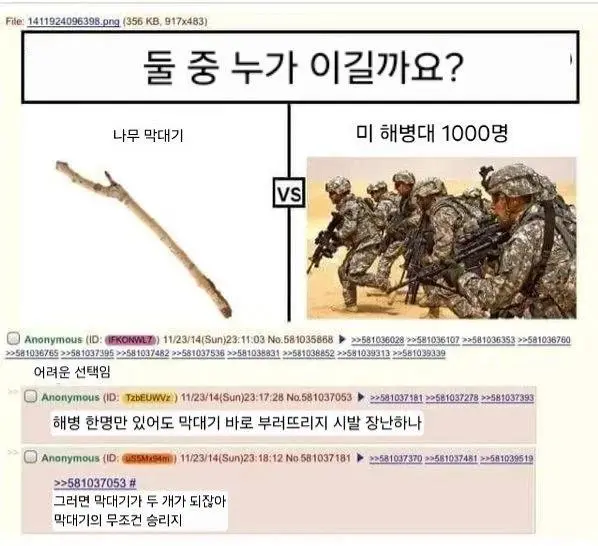

나뭇가지 1개 vs 미 해병 천명.jpg
댓글
크! 래! 용! 팝!
께떠꾸래용~
겟! 셋! 레디! 고!
황벨이네
막대기 먹어서 소화시키면 되는데
그럼 똥막대기가 되는거지
맹독성!
얼탱ㅋ
헉 너무 어렵다
"이제 2개 더 부러트리러 가자"
위 니더 리인포스먼!
막대기 서로 먼저 쓰려고 지들끼리 싸울거라서 애초에 밸붕임
불로 태우면 되지
해병대는 그럴지능이 안됨
그게 가능했으면 해병대를 왜 감
무한히 증식하는 막대기 vs 자꾸 전역하는 해병대
나뭇가지는 부러지기 전까진 단단한데...
+999강 나무막대기
뭔가 부러뜨리면 2개가 될 뿐이란게 철학적임
몇 번 부러뜨리면 막대기가 아니개 되는걸까
분자단위구조를 해체하면 더이상 막대기는 아니지 않을까
보통 단면 길이보다 옆면길이가 두배이상 긴 원통을 막대기라고 정의하니까 단면에 따라 다를듯
해병 한명 투입이면 모를까 천명 투입한 시점에서 전멸각인데 ㄷㄷ
해병대 천 명이 들어가는 이유가 있지 않을까?
나뭇가지 1개에 미해병대 1개 대대 규모가 투입될정도면 나뭇가지가 심상치않거나, 대대장이 정신이 나간거아닐까? 대대장 짤히고 해당 대대도 나뮷가지 하나 이기려고 한 대대라고 비웃음 당하고 결국 대대 해체당할듯 부러질언정 꺽이지 않은 나뭇가지의 최종 승리임
해병막대기 vs 해병해병대 1000명
나뭇가지 1개가 숲에 위장하면
미 해병대 1000명이 전역할 때까지 기다리면 이김
무슨 밈인가요 형님들 ㅋㅋ
500명쯤 죽고 휴전하겠군
따흐앙
사실 저 막대기 퉁 퉁 퉁 퉁 사후르임
1명~3명 정도로 축소하면 승산있음.
이는 워해머40k 가 증명
크레용이었으면 해병대가 이겼지